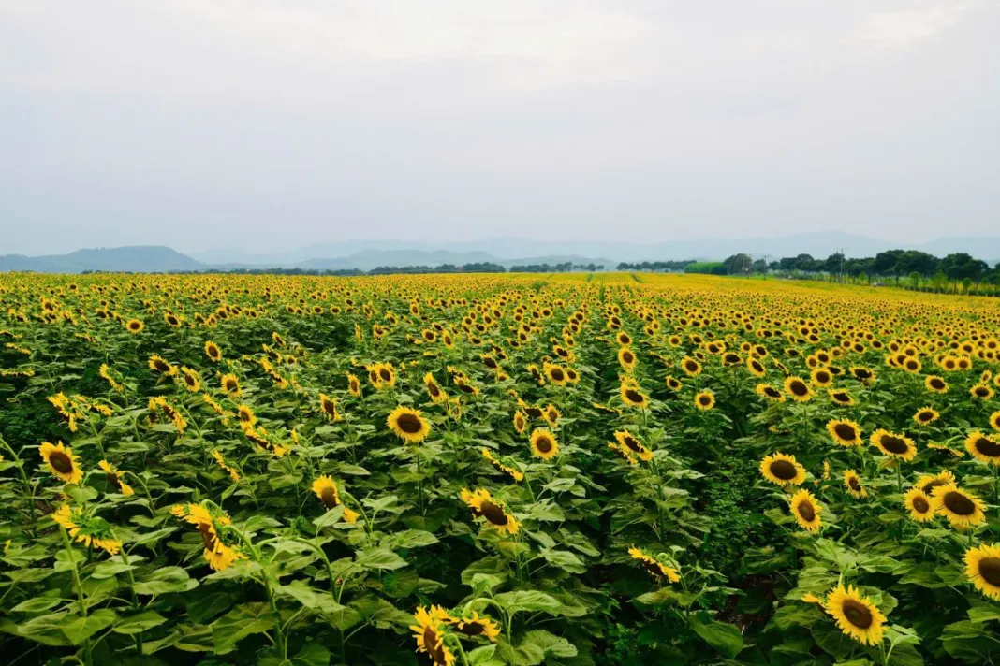
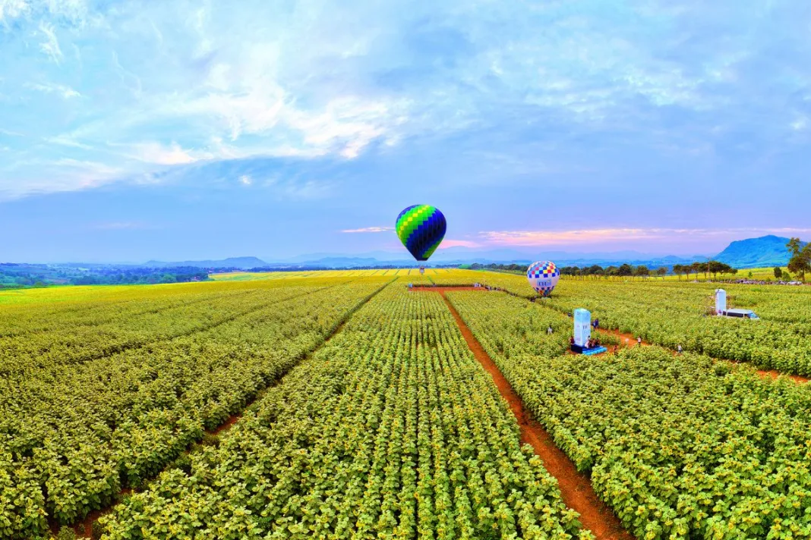
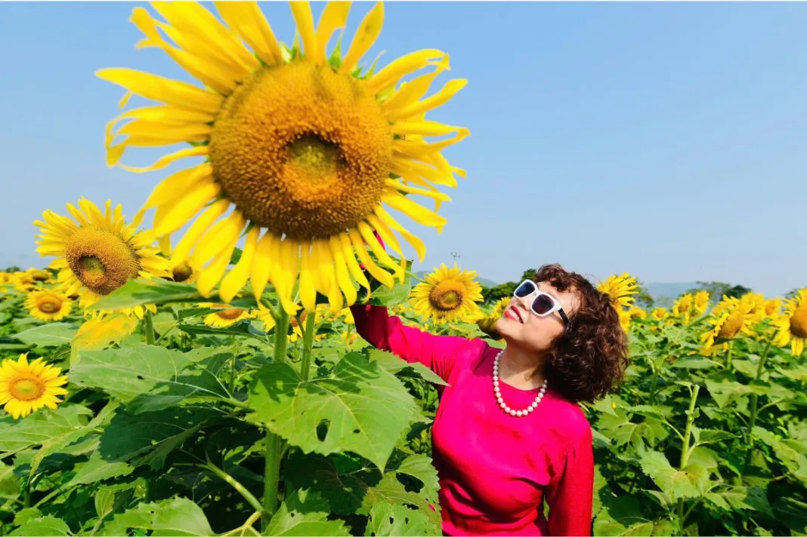

Có những buổi sáng, cả một vùng quê bỗng đổi màu: xanh của lá, vàng của hoa, và xa xa là dãy núi mờ trong sương.
Đến mùa hướng dương nở, người ta kéo nhau ra đồng từ rất sớm. Có người đến để ngắm, có người đến để chụp một tấm ảnh thật đẹp, có người chỉ đơn giản muốn đứng giữa màu vàng ấy một lúc cho lòng nhẹ đi.
Loạt ảnh dưới đây đi từ xa đến gần: từ cánh đồng nhìn từ trên cao, đến từng bông hoa, rồi đến những con người đứng giữa hoa.

Từ trên cao
Nhìn từ độ cao hàng trăm mét, cánh đồng hiện ra như tấm thảm khổng lồ, những đường đất đỏ chia lô như nét bút kẻ giữa nền vàng.

Càng đến gần, màu vàng càng có hình hài.
Con người giữa sắc vàng
Hoa đẹp hơn khi có người đứng cạnh. Nụ cười, cái giơ tay, ánh mắt ngước lên bông hoa lớn hơn cả khuôn mặt.

Cánh đồng rồi sẽ tàn, nhưng những tấm ảnh thì ở lại.